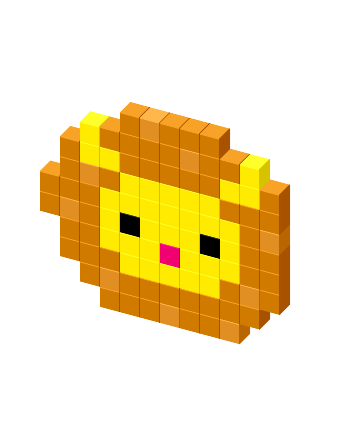

CeCiL - SQL Power Tools
CeCiL normalizes SQL select statements.
Pre-release software. Use at your own risk.
Beta
SQL Power Tools >>
CCL Power Tools >>
Oracle SQL
N
ormalize
Widen S
Q
L
Change SQL
C
ase
WITH order_task_activity AS (/* See Here: */ -- comment Case is NoT affected SELECT Row_number() OVER (PARTITION BY order_id ORDER BY Update_Date DESC) AS rank, order_id , task_status_code , task_status_reason_code FROM task_activity WHERE Update_Date > :StartDate AND order_id != 0 ) Select O.order_id, O.activity_type_code As Account_code, O.order_small_name, C.processed_state , C.item_extended_price As Price, 'String Case is not affected' as "quoted.IDentifier" from Orders O left Join Charge C On O.order_id = C.order_id And C.processed_state != 7821 And C.charge_item_id = 0 LEFT JOIN order_task_activity ota ON o.order_id = ota.order_id AND ota.rank = 1 WHERE o.orig_order_date >= :StartDate AND o.orig_order_date <= :EndDate AND Nvl(ota.task_status_reason_code, 0) != :TaskStatusReasonNotDoneCode])